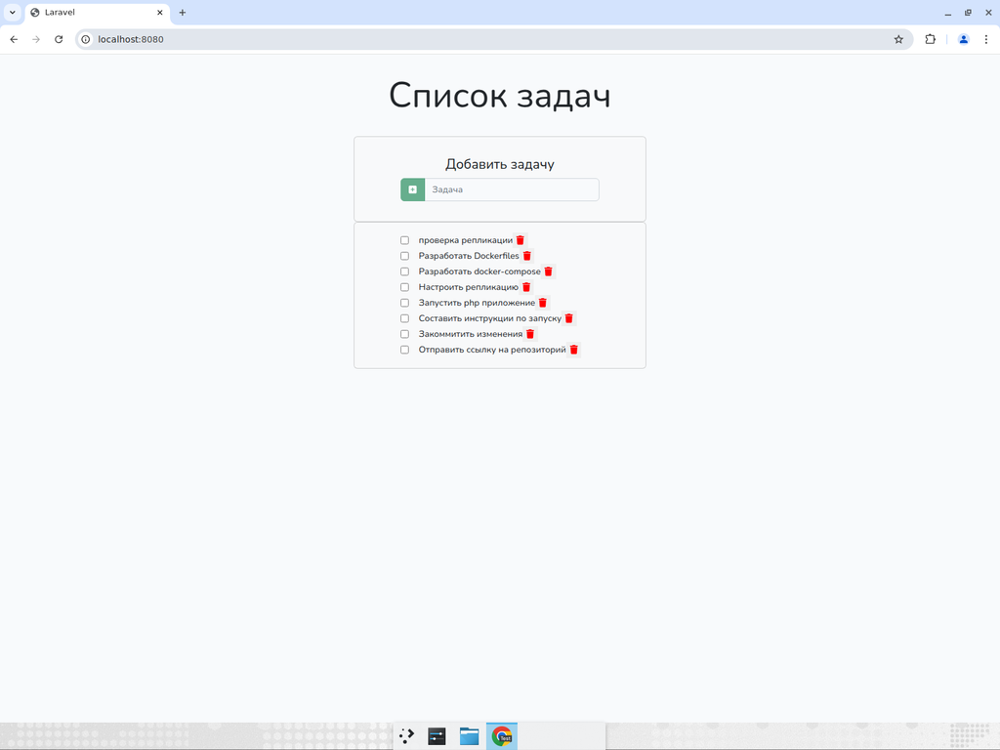
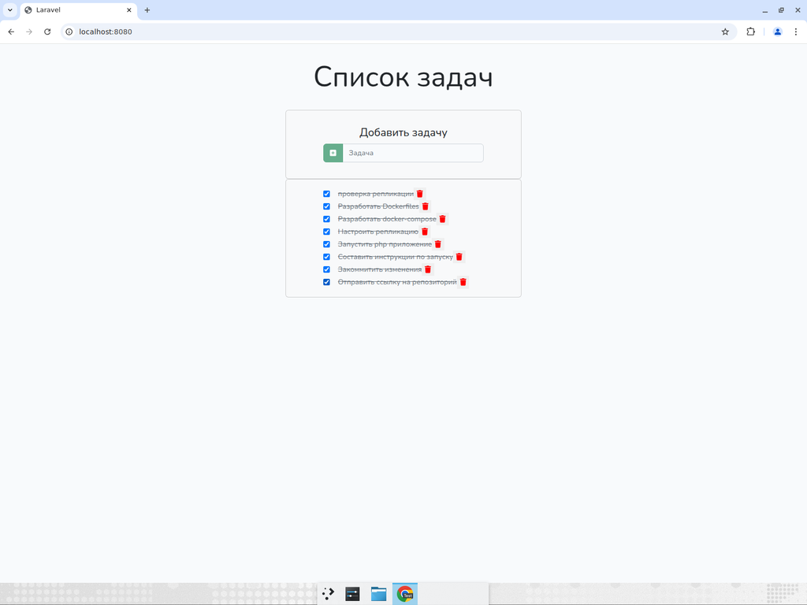
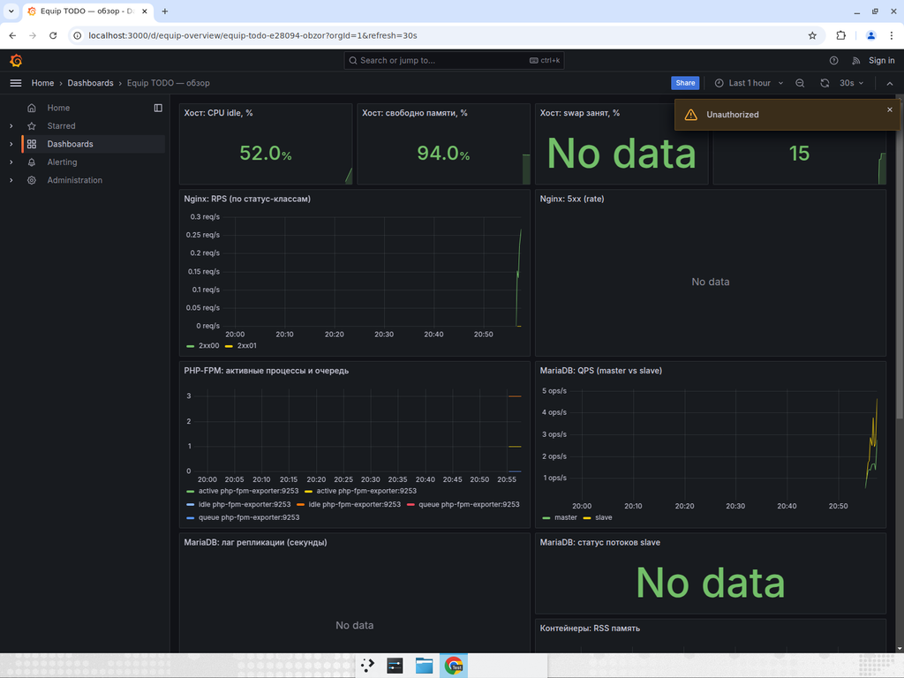
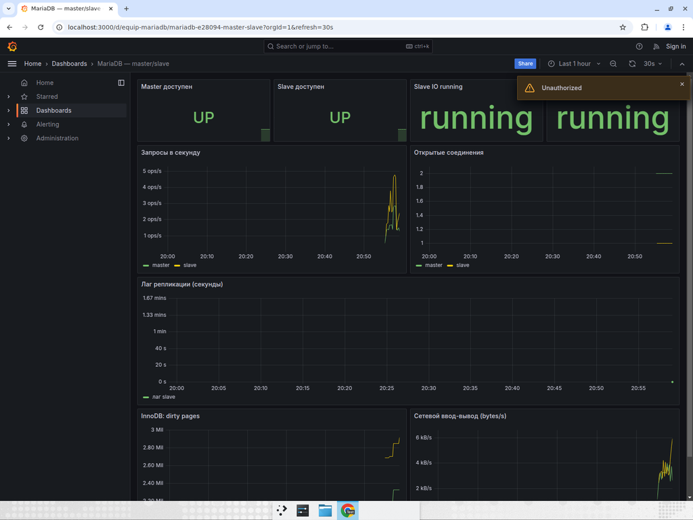
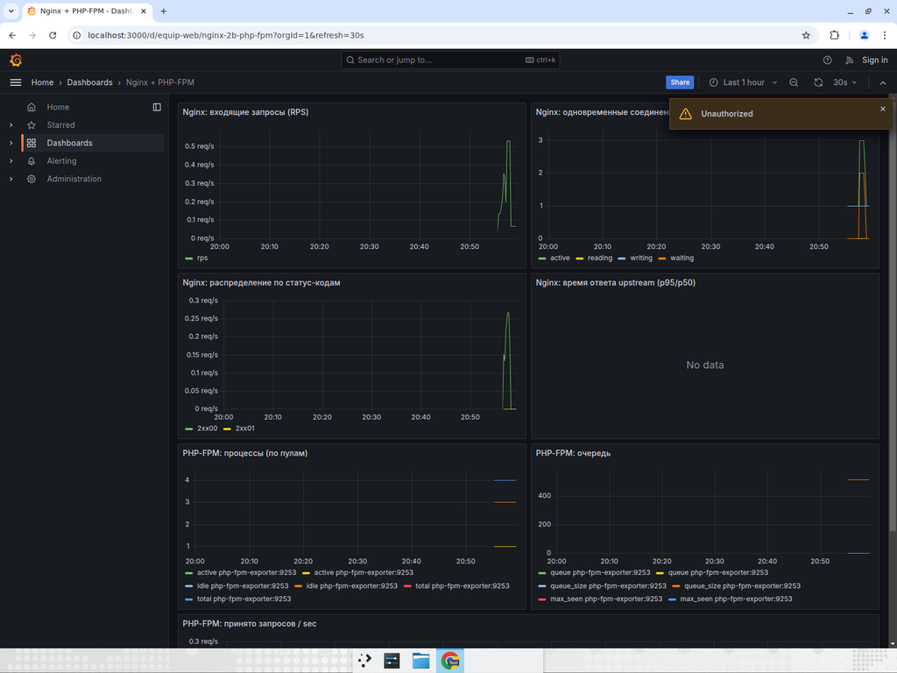
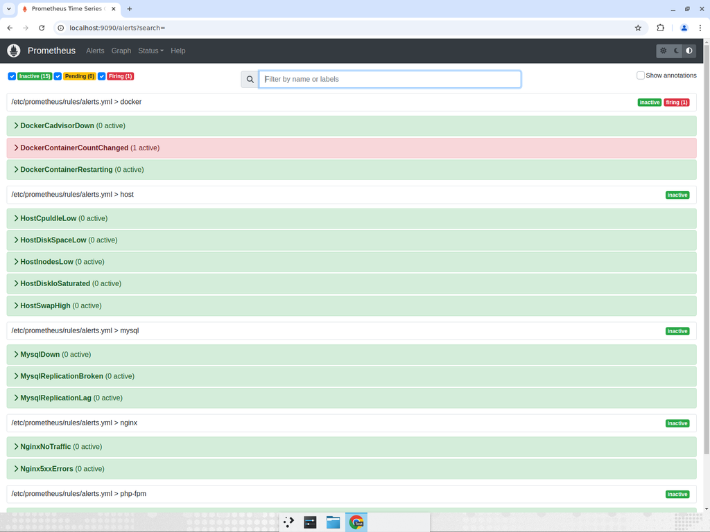

Требовалось развернуть PHP-приложение (Laravel 9, TODO List) с помощью Docker Compose. Основные пункты:
| Требование | Статус |
|---|---|
Приложение запускается одной командой docker compose up -d --build | выполнено |
| TODO List доступен по http://localhost:8080 | выполнено |
| Репликация Master → Slave (запись в master, чтение со slave) | выполнено |
| Балансировщик (Nginx, least_conn, 2 бэкенда) | выполнено |
| Prometheus + правила алертов (16 правил) | выполнено |
| Grafana с тремя дашбордами | выполнено |
| Alertmanager с маршрутизацией | выполнено |
| README с инструкцией, архитектурой, решениями | выполнено |
| Описание REST API | выполнено |
| Git-репозиторий с историей коммитов | выполнено |
┌──────────────┐
│ browser │
└──────┬───────┘
│ :8080
┌──────▼───────┐
│ nginx │ балансировщик + раздача статики
└──────┬───────┘
│ fastcgi (least_conn)
┌───────┴────────┐
▼ ▼
┌──────┐ ┌──────┐
│ app1 │ │ app2 │ php-fpm 8.1
└──┬───┘ └──┬───┘
│ writes │ reads
▼ ▼
┌────────┐ ┌────────┐
│ master │ ──repl──▶ slave │ MariaDB 10.11
└────────┘ └────────┘
| Сервис | Образ | Назначение |
|---|---|---|
| app1, app2 | equip-todo-app (multi-stage) | PHP-FPM 8.1, Laravel |
| nginx | nginx:1.27-alpine | балансировщик, статика |
| db-master | mariadb:10.11 | БД для записи |
| db-slave | mariadb:10.11 | БД для чтения (реплика) |
| migrate | equip-todo-app | миграции + seed (one-shot) |
| replication-init | mariadb:10.11 | настройка репликации (one-shot) |
| node-exporter | prom/node-exporter | метрики хоста |
| cadvisor | gcr.io/cadvisor | метрики контейнеров |
| nginx-exporter | nginx/nginx-prometheus-exporter | stub_status |
| nginxlog-exporter | prometheus-nginxlog-exporter | парсинг access-лога (5xx) |
| php-fpm-exporter | hipages/php-fpm_exporter | метрики FPM |
| mysqld-exporter ×2 | prom/mysqld-exporter | метрики master/slave |
| prometheus | prom/prometheus | сбор и хранение метрик |
| alertmanager | prom/alertmanager | маршрутизация алертов |
| grafana | grafana/grafana-oss | визуализация |
| Алерт | Условие | Severity |
|---|---|---|
| HostCpuIdleLow | CPU idle < 10% за 10 мин | warning |
| HostDiskSpaceLow | свободно < 10% | critical |
| HostInodesLow | inodes свободных < 10% | critical |
| HostDiskIoSaturated | io_time > 95% за 3 мин | warning |
| HostSwapHigh | swap > 90% | warning |
| DockerCadvisorDown | cadvisor недоступен 2 мин | critical |
| DockerContainerCountChanged | число контейнеров изменилось | info |
| DockerContainerRestarting | перезапуск > 0 за 2 мин | warning |
| NginxNoTraffic | RPS = 0 за 10 мин | warning |
| Nginx5xxErrors | 5xx > 0.1/s за 2 мин | critical |
| PhpFpmNoTraffic | принято = 0 за 3 мин | warning |
| PhpFpmDown | php-fpm не отвечает | critical |
| PhpFpmMaxChildrenReached | пул упёрся в max_children | warning |
| MysqlDown | БД недоступна | critical |
| MysqlReplicationBroken | IO/SQL thread остановлен | critical |
| MysqlReplicationLag | лаг > 60 секунд | warning |

Список задач с данными из сидера. Все записи доступны через API (GET /api/items).


CPU idle 52%, свободно памяти 94%, 15 контейнеров, RPS по статус-классам, PHP-FPM процессы, MariaDB QPS.

Master и Slave UP, IO/SQL потоки running, QPS, соединения, InnoDB dirty pages, сетевой ввод-вывод.

RPS, активные соединения, распределение по статус-кодам, PHP-FPM процессы и очередь.

16 правил алертов: 15 inactive (всё в норме), 1 firing (DockerContainerCountChanged — информационный алерт, срабатывает при перезапуске стека).
├── docker-compose.yml
├── .env.example
├── Makefile
├── README.md
├── src/ (Laravel as-is)
├── docker/
│ ├── php/ Dockerfile, entrypoint, php.ini, www.conf
│ ├── nginx/ nginx.conf, conf.d/app.conf
│ ├── mariadb/ master/slave my.cnf, init/setup-replication.sh
│ ├── prometheus/ prometheus.yml, rules/alerts.yml
│ ├── alertmanager/ alertmanager.yml
│ ├── grafana/ provisioning + dashboards (3 JSON)
│ └── nginxlog-exporter/ config.yml
└── docs/
├── architecture.md
└── api.md
cp .env.example .env docker compose up -d --build
После первого запуска (5–10 минут на сборку): приложение на :8080, Grafana на :3000, Prometheus на :9090.